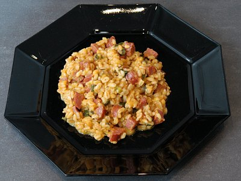

| Zutaten für 4 Personen: | |
| 1 El | Öl |
| 2 | Frühlingszwiebeln oder 100 g Lauch in feinen Ringen |
| 250 g | Ebly |
| 500 g | Kürbis, grob gerieben |
| 8 dl | Gemüsebouillon |
| 150 g | Appenzeller Rauchknebeli oder Landjäger in Würfeln |
| 5 El | geriebener Sbrinz |
| Salz, Pfeffer | |
Vor- und zubereiten: ca. 20 Minuten
Öl warm werden lassen. Zwiebeln andämpfen, Ebly und Kürbis kurz mitdämpfen.
Bouillon dazugiessen, aufkochen, Hitze reduzieren, offen ca. 10 Minuten köcheln.
Wurst und Käse darunter mischen, würzen.
19 g Fett, 17 g Eiweiss, 71 g Kohlenhydrate, 2145 kJ, 513 kcal
Betty Bossi Zeitung Nr. 8 2005 Seite 3
Hat am 10.10.2006 Ganz ordentlich geschmeckt. Vergleichbar mit Kürbis- Risotto. Ich hatte keinen Lauch und habe stattdessen Zwiebel genommen. Etwas mehr Kochzeit hätte dem Kürbis wohl auch nicht geschadet. Die Wurststücke sind geschmacklich sehr wichtig. RE
27.10.2007 Mit Frühlingszwiebeln zubereitet. War vielleicht etwas Fleischwürfellastig. Die Balance zwischen den Zutaten macht hier viel aus. RE
@LINKBACK_TAG@ @WAKELOCK@